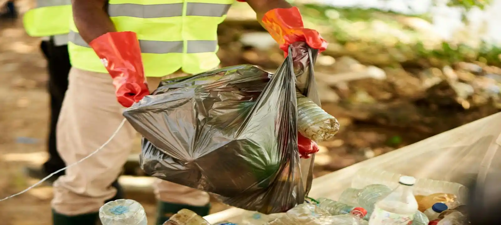
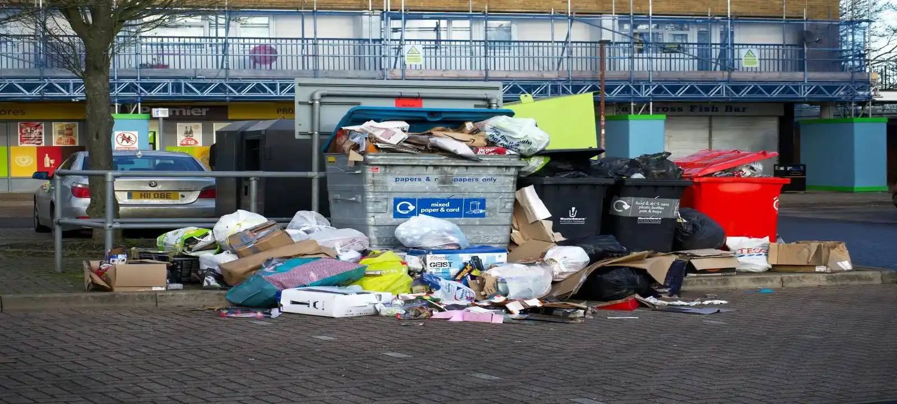

What Is Rubbish Removal In Townsville QLD?
Rubbish removal in Townsville QLD is a fully managed waste removal service where lifting, loading, transport, and disposal are handled for you. Unlike skip bin hire, customers do not need to organise loading themselves. This service is commonly used for household cleanups, moving house, deceased estates, office cleanouts, renovation waste, and situations where rubbish needs to be removed quickly and efficiently.
When You May Need Rubbish Removal In Townsville
Rubbish removal Townsville services are commonly needed when waste has already accumulated and needs immediate clearing without waiting for a skip bin. This includes urgent cleanups, rental property clearances, renovation projects, garage cleanouts, commercial waste, and green waste removal after landscaping work or storms. Many customers choose rubbish removal when they want a faster and more convenient solution with less physical effort involved.
Affordable Rubbish Removal Townsville
Affordable rubbish removal Townsville pricing usually depends on waste volume, labour required, access conditions, and disposal type. Smaller household jobs with easy access are generally more cost effective, while heavy materials or difficult loading conditions may increase overall cost. In many situations, rubbish removal can be a simpler and more affordable option than hiring a skip bin, especially for one-off cleanups where customers want everything handled quickly.
All Types Of Rubbish Removal Townsville
We help with all types rubbish removal Townsville projects including household rubbish, furniture disposal, green waste, renovation debris, office waste, deceased estates, garage cleanouts, light construction materials, and commercial rubbish removal. Different waste types often require different disposal processes, so we help customers organise the most practical removal solution based on the type and amount of rubbish involved.
Rubbish Removal Vs Skip Bin Hire
Rubbish removal in Townsville QLD is ideal for customers who want waste removed quickly without loading a skip bin themselves, while skip bin hire is better for longer projects where rubbish builds up over time. Many customers choose rubbish removal for urgent cleanups, household waste, and one-off jobs, while skip bins are more common for renovations and construction work.
Areas We Service
We provide rubbish removal services across Townsville and surrounding suburbs including Kirwan, Annandale, Douglas, North Ward, Aitkenvale, Idalia, Mount Louisa, Heatley, Deeragun, Bushland Beach, Rasmussen, Hermit Park, Pimlico, Garbutt, and nearby Townsville QLD areas. Our rubbish removal service covers both residential and commercial properties throughout the Townsville region.

Frequently Asked Questions
Is rubbish removal cheaper than skip bin hire in Townsville?
It depends on the job size, waste type, and how quickly the rubbish needs to be removed. For smaller or urgent cleanups, rubbish removal can often be more affordable because labour, loading, and disposal are fully handled for you.
How fast can rubbish removal be organised in Townsville QLD?
In many cases, rubbish removal Townsville QLD services can be arranged quickly depending on waste volume, property access, and local availability. Urgent or same-day cleanups may sometimes be available for smaller jobs.
What type of waste can be removed?
Most household rubbish, green waste, furniture, renovation debris, office waste, and light construction materials can be removed. Hazardous materials such as asbestos, chemicals, or restricted waste types usually require specialised disposal services.